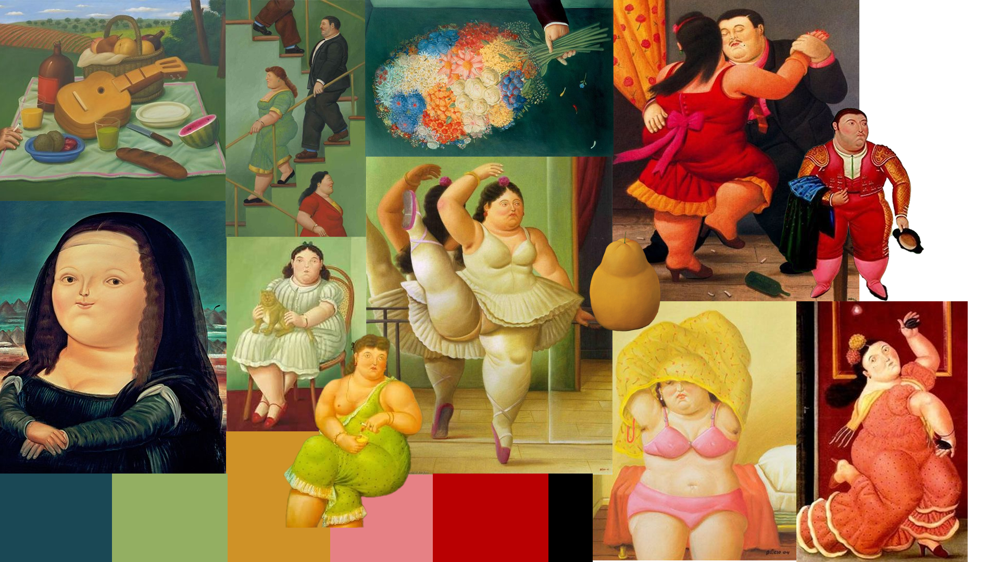

Typography
H1 headline
H2 headline
H3 headline
H4 headline
H5 headline
H6 headline
This is what body copy looks like. Strategic design means designing for a specific objective. More often than not, that objective is growing a business. But it’s important to recognize that there’s a difference between being strategic by being the conduit between the business and the user, and designing for the business alone.
Moodboard + color selection
Botero's petrol blue
#1E4959
Botero's green
#97B751
Botero's scarlet
#B90101
Botero´s bubblegum pink
#E68185
Botero's yellow
#CE9227
Botero's ocean blue
#1A668D
Botero's gray 900
#FEB33F
Botero's gray 800
#FEB33F
Botero's gray 300
#FEB33F
Botero's gray 200
#FEB33F
Botero's gray 100
#FEB33F